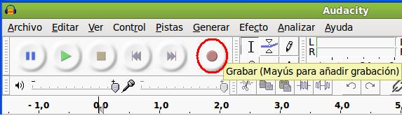
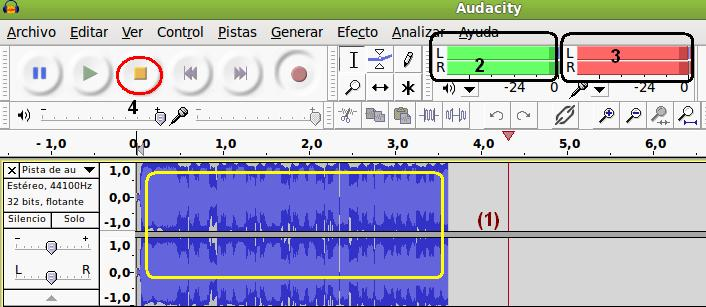
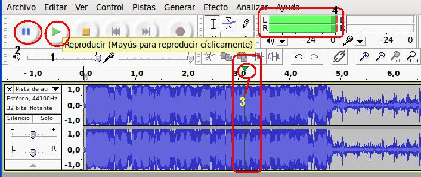

4. Grabando con Audacity
1- Iniciamos el programa: Aplicaciones / Sonido y video / Audacity, editor de Sonido.
2- Hacemos clic en el botón grabar (rojo) .

3 - El proceso de grabación se inicia y podemos hablar por nuestro micro. El resultado será parecido al mostrado por esta imagen.

Donde: (1) la pista donde grabamos nuestra voz
(2) El volumen de nuestro altavoz por el que nos estaremos escuchando mientras grabamos
(3) El volumen del micro de entrada de nuestra voz al sistema
(4) El botón para detener nuestra grabación
4- Para reproducir nuestra grabación:

En (1) se reproduce.
(2) Se pausa la reproducción.
(3) Indica la posición de la reproducción en la pista de grabación
(4) volumen de nuestra reproducción
5- Para guardar nuestra grabación: Archivo / Guardar como.
Jo.R.C.A. 2004 - 2011

Edición de Audio y Video con Software Libre by José Ramón Cerdeira Alonso is licensed under a Creative Commons Reconocimiento-No comercial-Compartir bajo la misma licencia 3.0 España License